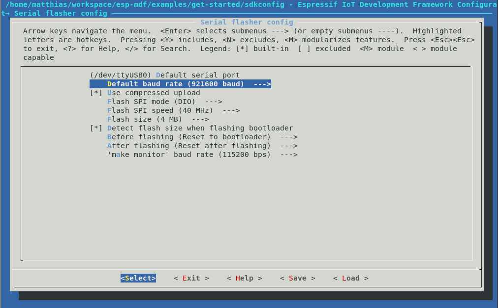

To the first codelab of the Embedded Meetup Group Munich
What's the target audience of this tutorial?
Everybody interested in programming C or C++
No previous coding experience needed
What is an ESP32?
The ESP32 is a low cost WiFi Chip

Some basics that you'll also learn in this codelab are:
- Git & Github - learn the basics of source control
This codelab will walk you through the process of setting up the environment to compile and program some example code to an ESP32 and start some own development to extend the functionality of the given sample
What you will build
- A sample application using the ESP32
What you'll learn
- How to build & compile a program for a Microcontroller
- How to program a Microcontroller with your compiled code
- How to set up a Mesh Network with the ESP32
What you'll need
- A ESP32 development board
- A computer running Linux, Windows, or macOS
- A USB cable to connect the dev board to your computer
- A text editor, or the IDE of your choice
- Basic knowledge of C
This codelab is focused on Embedded Code. Non-relevant concepts and code blocks are glossed over and are provided for you to simply copy and paste.
Setting up Git
If you have experience with Git and Github already, feel free to jump directly to the next chapter
Linux (Ubuntu)
Install the git package
sudo apt-get install gitSet your git name and email
git config --global user.name "John Doe"
git config --global user.email "john.doe@gmail.com"Setting up the Toolchain
Linux (Ubuntu)
mkdir -p ~/esp
cd ~/esp
tar -xzf ~/Downloads/xtensa-esp32-elf-linux64-1.22.0-80-g6c4433a-5.2.0.tar.gzmkdir -p ~/esp
cd ~/esp
tar -xzf ~/Downloads/xtensa-esp32-elf-linux32-1.22.0-80-g6c4433a-5.2.0.tar.gzSetting up Build Requirements
sudo apt-get install gcc git wget make libncurses-dev flex bison gperf python python-pip python-setuptools python-serial python-cryptography python-future python-pyparsingexport PATH="$HOME/esp/xtensa-esp32-elf/bin:$PATH"Windows
Unzip the zip file to C:\ (or some other location, but this guide assumes C:\) and it will create an msys32 directory with a pre-prepared environment.
macOS
Getting the Source Code
Checking out the espressif Mesh Development Kit can be done with following command, be sure to add the recursive option, to check out all the submodules. The submodules also contain a specific version of the ESP-IDF, the common
git clone --recursive https://github.com/espressif/esp-mdf.git
export MDF_PATH=~/esp/esp-mdfConnecting the ESP32 Board to your computer
Connecting the DEV-BOARD to your PC is done with a plain USB cable, the Dev Board holds a FTDI chip, that provides a serial interface to the ESP32.

Windows COM1
Linux /dev/ttyUSB
macOS /dev/cuBuild and flash the project by running:
Build and flash your device using
makeThe esp-idf uses menuconfig to apply Kernel configurations.
make menuconfig
Programming the device can be done with espressif tools esptools
make flashTBD
esptool.py v2.0-beta2 Flashing binaries to serial port /dev/ttyUSB0 (app at offset 0x10000)... esptool.py v2.0-beta2 Connecting........___ Uploading stub... Running stub... Stub running... Changing baud rate to 921600 Changed. Attaching SPI flash... Configuring flash size... Auto-detected Flash size: 4MB Flash params set to 0x0220 Compressed 11616 bytes to 6695... Wrote 11616 bytes (6695 compressed) at 0x00001000 in 0.1 seconds (effective 920.5 kbit/s)... Hash of data verified. Compressed 408096 bytes to 171625... Wrote 408096 bytes (171625 compressed) at 0x00010000 in 3.9 seconds (effective 847.3 kbit/s)... Hash of data verified. Compressed 3072 bytes to 82... Wrote 3072 bytes (82 compressed) at 0x00008000 in 0.0 seconds (effective 8297.4 kbit/s)... Hash of data verified. Leaving... Hard resetting...
make monitorMONITOR --- idf_monitor on /dev/ttyUSB0 115200 --- --- Quit: Ctrl+] | Menu: Ctrl+T | Help: Ctrl+T followed by Ctrl+H --- ets Jun 8 2016 00:22:57 rst:0x1 (POWERON_RESET),boot:0x13 (SPI_FAST_FLASH_BOOT) ets Jun 8 2016 00:22:57 ...

Congrats, you now can do the full compile / program / debug cycle :-)
blabla

TBD
TBD